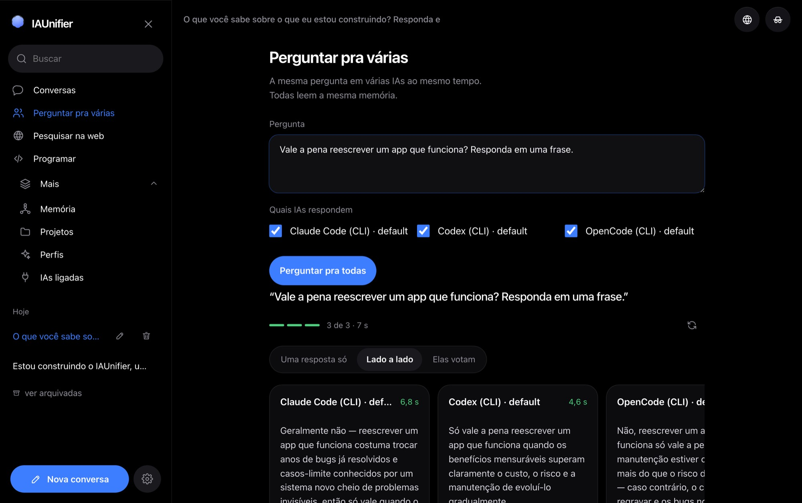
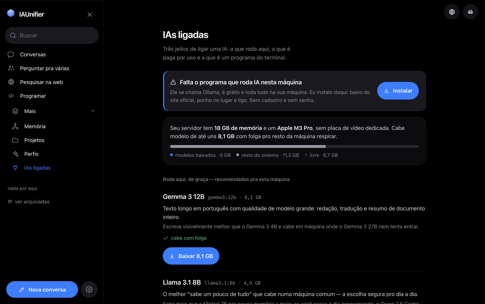
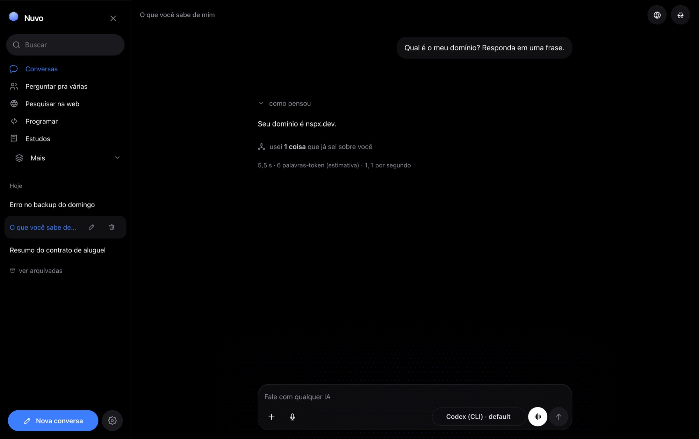
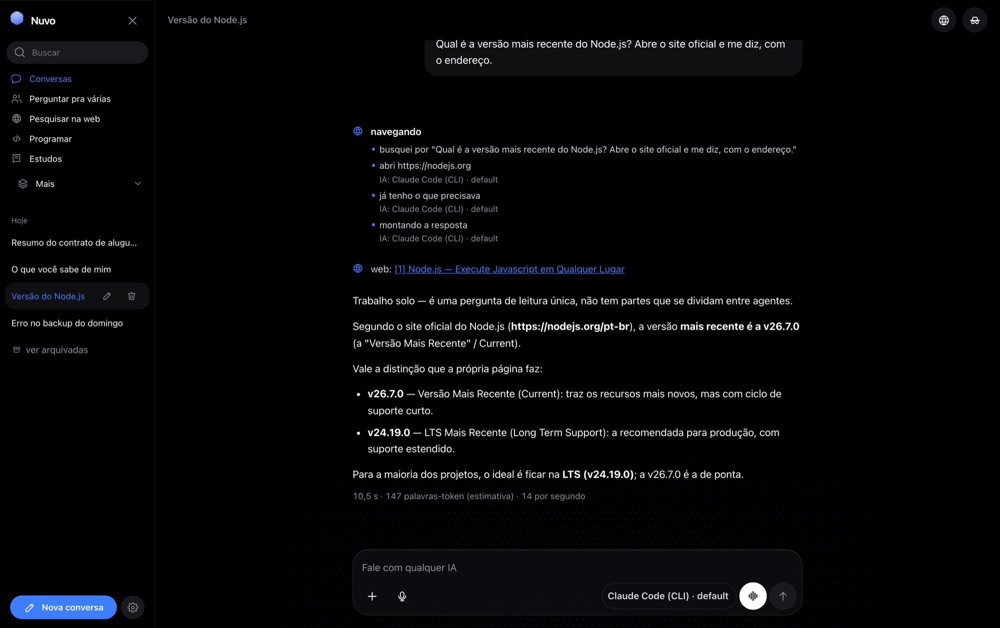

É assim que o app abre. Sem tela de login, sem escolher plano — a conversa já está ali.
Os modelos que rodam no seu computador, as IAs pagas por uso e os programas de terminal, numa conversa só. O que você conta pra uma, todas sabem.
Cada IA que você usa hoje começa do zero. IAUnifier guarda o que importa uma vez — como você gosta de resposta, o que tem no seu projeto, o que já ficou decidido — e entrega pra qualquer uma delas na hora de responder.
Cada coisa guardada mostra de qual conversa veio.
Mudar, esquecer ou desligar a memória só nesta resposta.
A memória é um arquivo na sua máquina, não uma conta em servidor de ninguém.
A mesma pergunta em várias IAs, todas lendo a mesma memória. Compare lado a lado, deixe que elas votem ou receba as respostas costuradas numa só. Quem responde em três segundos não fica esperando quem leva quarenta.


IAUnifier olha a memória RAM e o processador da sua máquina e diz, em português, o que dá pra rodar: o que cabe com folga, o que cabe apertado e o que não cabe. Cada modelo vem com uma frase sobre para que ele é bom e por que escolhê-lo em vez do outro.
Os mesmos programas que você já usa no terminal respondem dentro da conversa, sem chave de API e sem cobrança por uso — eles usam a assinatura que você já tem. Leem a mesma memória das outras e trabalham na pasta que o projeto apontar.


Um clique no globo e a IA passa a dirigir um navegador de verdade: busca, entra no site, clica, lê e volta com a resposta e o endereço de onde tirou. Não é o resumo de um resultado de busca — é a página aberta, inclusive a que só existe depois que o JavaScript roda. Você acompanha cada passo e o porquê dele.
Funciona com qualquer IA da lista, inclusive as que rodam na sua máquina, desde que você tenha Chrome, Chromium, Edge ou Brave instalado. O navegador abre num perfil separado, longe da sua sessão do dia a dia, e não preenche campo de senha.
IAUnifier é um programa que você instala e roda na sua máquina, não um serviço na nuvem. Os modelos locais respondem sem internet. As IAs pagas por uso recebem só o que você mandar, com a sua chave. Memória, arquivos e histórico ficam numa pasta sua — dá pra abrir, copiar e apagar na mão.
Um toque e a conversa não entra no histórico, não usa a memória e não aprende nada. Some quando você fechar.
Versão 0.1.4. Grátis e de código aberto. Os modelos locais não custam nada; as IAs pagas por uso usam a sua chave.
Máquina mais antiga? Mac com Intel · Linux ARM64 · todos os arquivos.
No Linux, instale a libatomic antes: sudo apt install libatomic1 no Debian e Ubuntu, dnf install libatomic no Fedora. Sem ela o programa nem abre.
O app roda em qualquer máquina — quem pede memória RAM são os modelos locais, e a tela de IAs ligadas diz o que cabe na sua. Ou compile a partir do código.